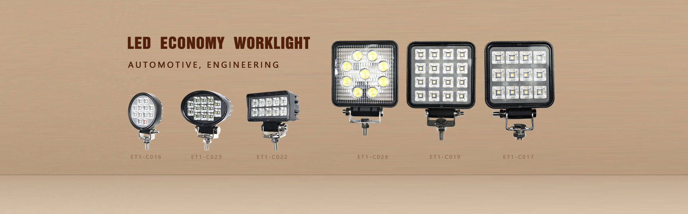
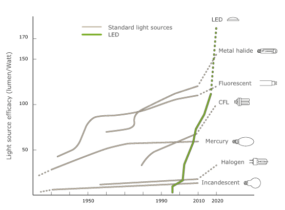
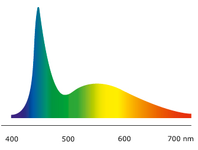
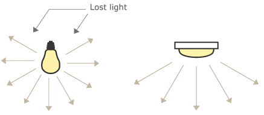
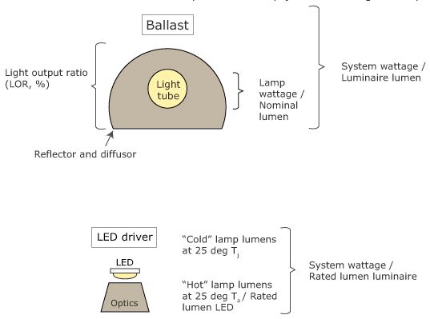
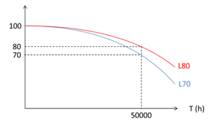
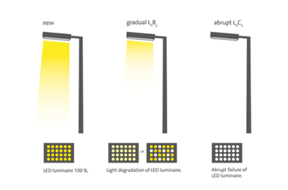
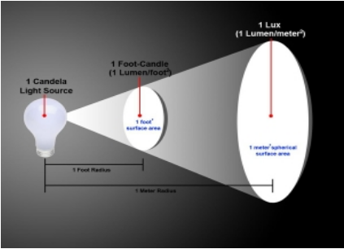

Knowledge Center知识中心
LED Lighting Resource Center LED 照明资源中心
Expert knowledge on LED technology, industry standards, and application best practices — helping professionals make informed lighting decisions. LED 技术、行业标准与应用最佳实践的专业知识——帮助专业人士做出明智的照明决策。
A Light Emitting Diode (LED) generates light in a semi-conductor material, which is an electronic component. Using the right materials, a diode may produce visible light of various wavelengths.
发光二极管（LED）在半导体材料中产生光线。使用合适的材料，二极管可以产生各种波长的可见光。
White light is created by either using a blue diode or "chip" and adding yellow phosphor on top, or by mixing light from one red, one green and one blue diode (RGB). The use of phosphor conversion is the most commonly used method in the lighting industry, due to its high efficacy and flexible production method.
白光由蓝色二极管（芯片）加黄色荧光粉产生，或通过红、绿、蓝三色（RGB）混光实现。荧光粉转换法是照明行业最常用的方法，因其光效高且生产工艺灵活。

The phosphor can be added directly onto each diode, or as a remote phosphor plate on top of a mixing chamber. This method creates a particular color spectrum or spectral power distribution for the LED depending on the phosphor layer.
荧光粉可以直接涂覆在每个二极管上，或作为远程荧光板置于混光腔上方。根据荧光粉层的不同，该方法会为 LED 产生特定的色谱或光谱功率分布。
LED is not a new invention — most of us are familiar with LEDs being the red or green signal markers on Wi-Fi routers or televisions. These are referred to as low-power LEDs. During the last decade, "high power" LEDs operating at around 1W have reached a level of cost and performance that make them attractive to the general lighting industry.
LED 并非新发明——大多数人都熟悉 Wi-Fi 路由器或电视上的红绿信号指示灯，这些被称为低功率 LED。近十年来，功率约 1W 的"高功率"LED 在成本和性能上已达到对通用照明行业具有吸引力的水平。

The chart above illustrates the development in efficacy (lm/W) over time for conventional and LED light sources. Whereas fluorescent tubes are expected to reach a maximum of 120 lm/W in 2020, LEDs may reach around 200 lm/W. (Source: Osram)
上图展示了传统光源与LED光源光效（lm/W）随时间的发展。荧光灯管预计在2020年达到最高120 lm/W，而LED可达约200 lm/W。（来源：Osram）
LED 的优势之一是所有光线朝一个方向发射。这意味着灯具内部反射更少——因为我们通常只需要向下的光线。如果需要上下双向配光，LED 的适用性则不如 T5 荧光灯。
Conventional light sources cast a lot of light backwards, which may be lost in the optics design of a luminaire. The LED, on the other hand, emits all light in one direction.
传统光源会向后方投射大量光线，这些光线可能在灯具光学设计中损失。而 LED 所有光线都朝一个方向发射。
The performance of LED is often measured in terms of lumens per watt or efficacy. With luminaires with fluorescent tubes, the efficiency is explained using the LOR or Light Output Ratio.
LED 的性能通常以流明每瓦（光效）来衡量。对于荧光灯管灯具，效率通过 LOR（光输出比）来表示。

One should pay special attention to the difference between rated lumen, luminaire and rated lumen, lamp, which is measured on the LED module. Previously, LED manufacturers listed the lumen output at a junction temperature of 25 degrees, or so-called cold lumens. The junction temperature is measured inside the diode itself. Today, a more common denomination is to use hot lumens, i.e. lumens measured at an ambient temperature of e.g. 25°C, where the junction temperature is much higher.
需特别注意"灯具额定流明"与"光源额定流明"的区别——后者是在 LED 模块上测量的。以往 LED 制造商标注的是结温 25°C 下的流明输出（即冷流明）。如今更常用的是热流明，即在环境温度 25°C 条件下测量的流明值，此时结温要高得多。

One of the benefits of an LED light source is its long expected lifetime. Because LEDs have no movable parts or filaments that may break, they can live longer than other light sources.
LED 光源的优势之一是其长寿命预期。由于 LED 没有可能断裂的活动部件或灯丝，其寿命远超其他光源。
The light output from all light sources — including LED, halogen, metal halide and fluorescent — decreases over time. The amount of light from the light source at a specific time in the future is referred to as the lamp lumen maintenance factor, or LLMF.
包括 LED、卤素灯、金卤灯和荧光灯在内的所有光源，其光输出都会随时间衰减。未来特定时间点的光输出量称为灯具光通维持率（LLMF）。
The lifetime of an LED module is defined as the time it takes until its light output, or lumen maintenance, reaches 70% of the initial output — known as L70. In other words, the module does not die instantly as many conventional light sources do, but rather slowly dims down. The luminaire industry has standardized LED lifetime L70 to a minimum of 50,000 hours.
LED 模块的寿命定义为光输出（光通维持率）降至初始值 70% 所需的时间——即 L70。换言之，模块不会像许多传统光源那样瞬间熄灭，而是逐渐变暗。照明行业已将 LED 寿命 L70 标准化为至少 50,000 小时。

For high-quality LED products, the lumen degradation is often better than the industry standard, with more than 80% of the initial output remaining after 50,000 hours. With this upgrade, up to 25% of the luminaires may be left out depending on ceiling type — meaning lower installation costs and a lower energy bill.
对于高品质 LED 产品，光衰通常优于行业标准，50,000 小时后仍能保持 80% 以上的初始光输出。凭借这一提升，根据天花板类型最多可减少 25% 的灯具数量——这意味着更低的安装成本和更少的电费。

F Value: The F value depicts the combined failure fraction — the combination of both gradual degradation and abrupt total failures of the luminaire.
F 值：F 值描述了综合故障率——即灯具逐渐衰减和突然完全失效的组合概率。
Driver Lifetime: The LED driver can be compared to other electronic components such as HF-ballasts for T5 lamps. Its expected lifetime depends on the design itself, the components used, and the temperature of these components. Smartware only uses drivers from quality suppliers. Drivers are marked with a reference temperature point, Tc, where the stated temperature should never be exceeded.
驱动器寿命：LED 驱动器可类比于 T5 灯具的电子镇流器等电子元件。其预期寿命取决于设计本身、所用元件及元件温度。云智迈科技仅采用优质供应商的驱动器，驱动器标注有参考温度点 Tc，使用中不得超过该温度。
Smartware aims to deliver LED luminaires with single LEDs, LED modules, and LED drivers of the best possible quality. We strive to provide customers with the quality they demand — nothing more, nothing less. By doing this, we provide an excellent cost/benefit ratio to our customers.
云智迈科技致力于提供最优质的单颗 LED、LED 模组和 LED 驱动器。我们力求为客户提供他们所需的品质——不多不少，恰到好处。以此为基础，我们为客户提供卓越的性价比。
Our engineers are among the world's leading experts on LED technology. We use their expertise to design and manufacture innovative products with low energy consumption and long life. Equally important is our experience and know-how about the design of optics and thermal control, so that the products will perform to standard over a long period of time.
我们的工程师团队是全球 LED 技术领域的顶尖专家。我们运用其专业知识设计和制造低能耗、长寿命的创新产品。同样重要的是我们在光学设计和热控制方面的经验与技术积累，确保产品长期保持标准性能。
The Ingress Protection (IP) Code outlines a system of classification for the protection of electrical enclosures against the intrusion of foreign bodies (i.e. tools, fingers, dust, etc.) and moisture. The system was specified by the International Electrotechnical Commission and is officially designated as IEC 60529. The rating is specified by the letters IP followed by two digits — e.g. IP65, IP67, IP68.
IP（Ingress Protection）防护等级是电气外壳对外来物体（工具、手指、灰尘等）和水分侵入的防护能力分类体系。该体系由国际电工委员会（IEC）制定，官方编号为 IEC 60529。防护等级以字母 IP 加两位数字表示，如 IP65、IP67、IP68。
First Digit — Solid Particle Protection:
- 0 — No protection
- 1 — Protection against objects >50mm
- 2 — Protection against objects >12mm
- 3 — Protection against objects >2.5mm
- 4 — Protection against objects >1.0mm
- 5 — Dust protected (limited ingress permitted)
- 6 — Dust tight (complete protection)
第一位数字 — 固体防护等级：
- 0 — 无防护
- 1 — 防护 >50mm 物体
- 2 — 防护 >12mm 物体
- 3 — 防护 >2.5mm 物体
- 4 — 防护 >1.0mm 物体
- 5 — 防尘（有限侵入）
- 6 — 完全防尘
Second Digit — Liquid Ingress Protection:
- 0 — No protection
- 1 — Protection against vertically falling drops
- 2 — Protection against drops at 15° angle
- 3 — Protection against spraying water
- 4 — Protection against splashing water
- 5 — Protection against water jets
- 6 — Protection against powerful water jets
- 7 — Protection against temporary immersion (up to 1m)
- 8 — Protection against continuous immersion
第二位数字 — 液体防护等级：
- 0 — 无防护
- 1 — 防护垂直滴水
- 2 — 防护 15° 角滴水
- 3 — 防护喷淋水
- 4 — 防护飞溅水
- 5 — 防护喷射水
- 6 — 防护强力喷射水
- 7 — 防护短时浸泡（最深 1m）
- 8 — 防护持续浸泡
Color temperature describes the visual appearance of light, measured in Kelvin (K). It indicates whether a light source appears warm (yellowish), neutral, or cool (bluish). This is a fundamental concept in lighting design, as different color temperatures suit different environments and applications.
色温描述光线的视觉外观，以开尔文（K）为单位。它表明光源是暖色（偏黄）、中性还是冷色（偏蓝）。这是照明设计的基本概念，不同色温适合不同的环境和应用。
Common Color Temperature Ranges:
- 1,000K – 3,000K — Warm White: Candlelight, incandescent bulbs. Creates a cozy, intimate atmosphere. Ideal for residential, hospitality, and restaurant lighting.
- 3,000K – 4,500K — Neutral / Cool White: Standard office and retail lighting. Clean, alert atmosphere without being clinical.
- 4,500K – 6,500K — Daylight White: Simulates natural daylight. Best for task lighting, workshops, garages, and applications requiring high visual acuity.
- Above 6,500K — Cool Daylight: Bluish-white light. Used in specialized industrial and automotive applications where maximum contrast is needed.
常见色温范围：
- 1,000K – 3,000K — 暖白光：烛光、白炽灯效果。营造温馨亲密的氛围。适用于住宅、酒店和餐厅照明。
- 3,000K – 4,500K — 中性/冷白光：标准办公室和零售照明。清爽警觉的氛围，不会过于冰冷。
- 4,500K – 6,500K — 日光白：模拟自然日光。最适合任务照明、车间、车库及需要高视觉敏锐度的应用。
- 6,500K 以上 — 冷日光：蓝白色光线。用于需要最大对比度的专业工业和汽车应用。
At Smartware, we offer LED products across a range of color temperatures to match specific application needs — from warm 3000K for comfortable interior work to crisp 6500K for demanding outdoor and automotive environments.
云智迈科技提供涵盖多种色温范围的 LED 产品，以满足不同应用需求——从适合舒适室内工作的 3000K 暖光，到适合严苛户外和汽车环境的 6500K 明亮日光。
LED lamp output values (Lumens) can vary dramatically depending on which values are being quoted. The following information may assist in selecting the right product for the right application.
LED 灯具的光输出值（流明）因引用的数值类型不同而差异显著。以下信息有助于为不同应用选择合适的灯具。
Raw Lumens: Raw Lumen output is calculated by multiplying the theoretical rated output of the LEDs by the number of LEDs in the lamp. Example: LEDs rated at 100 Lumens per watt — 8 LEDs × 100 = 800 Raw Lumens.
原始流明：将 LED 的理论额定输出乘以灯具中 LED 数量计算得出。示例：LED 额定 100 流明/瓦 — 8 颗 × 100 = 800 原始流明。
Effective Lumens: Effective Lumen output is a measured number that takes into account real-world losses — thermal, optical, and assembly. Example: Raw Lumens = 800. Thermal, Optical & Assembly Losses can be 20–50%. Therefore, 800 − 160/400 = 640/400 Effective Lumens.
有效流明：是考虑实际损耗（热损耗、光学损耗、装配损耗）后的实测数值。示例：原始流明 = 800，热损耗 + 光学损耗 + 装配损耗约为 20-50%，因此有效流明 ≈ 400-640。
Thermal Losses: As LED temperature increases, light output decreases. Poor thermal management can significantly reduce effective lumens.
热损耗：LED 温度升高时光输出会降低。不良的热管理会显著减少有效流明。
Optical Losses: Light passing through lenses, reflectors, or covers loses a percentage of output. Quality optics minimize this loss.
光学损耗：光线穿过透镜、反射器或面罩会损失一定比例的输出。优质光学设计可最大限度减少此类损失。
Assembly Variation: Manufacturing tolerances in LED placement, soldering, and component alignment all contribute to output variation from unit to unit.
装配差异：LED 定位、焊接及元件对齐中的制造公差都会导致不同产品单元之间的输出差异。
Watt (W): A measure of the total electrical power input of a light source — not its light output.
瓦特（W）：衡量光源总输入电功率的单位——而非光输出。
Lumen (lm): A measure of the total visible light output of a light source. The higher the lumen rating, the brighter the light appears.
流明（lm）：衡量光源总可见光输出的单位。流明值越高，灯光越亮。
Candlepower / Candela (cd): A measure of the intensity of a light source in a particular direction. "Candlepower" is an older term now largely replaced by "candela."
坎德拉（cd）：衡量光源在特定方向上发光强度的单位。"Candlepower（烛光）"是旧术语，现已基本被"坎德拉"取代。
Foot-candle (fc) & Lux (lx): Both measure the amount of visible light falling on a surface. Foot-candle uses Imperial units (feet), while Lux uses metric (meters). 1 fc ≈ 10.764 lux. A single foot-candle is equivalent to the amount of light falling on a surface one foot away from a single candle.
英尺烛光（fc）与勒克斯（lx）：两者均衡量照射到表面上的可见光量。英尺烛光使用英制单位，勒克斯使用公制单位。1 fc ≈ 10.764 lux。1 英尺烛光相当于距离单支蜡烛一英尺远的表面上接收到的光量。

The Color Rendering Index (CRI) is a quantitative measure of a light source's ability to reveal the colors of objects faithfully in comparison with a natural light source. CRI is measured on a scale from 0 to 100, with 100 representing perfect color rendering equivalent to natural daylight or incandescent light.
显色指数（CRI）是衡量光源与自然光源相比真实呈现物体颜色能力的量化指标。CRI 以 0 到 100 的量表测量，100 代表等同于自然日光或白炽灯的完美显色能力。
CRI Ratings Guide:
- CRI 90–100 — Excellent: Suitable for applications where color accuracy is critical — museums, art galleries, medical facilities, high-end retail.
- CRI 80–89 — Good: Standard for most commercial and office lighting. Colors appear natural and vibrant.
- CRI 70–79 — Fair: Acceptable for industrial and outdoor applications where color discrimination is less critical.
- CRI Below 70 — Poor: May cause colors to appear washed out or distorted. Generally not recommended for occupied spaces.
CRI 等级指南：
- CRI 90–100 — 优秀：适用于色彩准确性至关重要的场景——博物馆、美术馆、医疗设施、高端零售。
- CRI 80–89 — 良好：大多数商业和办公照明的标准。色彩呈现自然生动。
- CRI 70–79 — 一般：适用于色彩辨别要求不高的工业和户外应用。
- CRI 低于 70 — 较差：可能导致色彩暗淡或失真。通常不建议用于人员长时间停留的空间。
Smartware LED products are designed to deliver CRI ratings appropriate to each application — from high-CRI options for precision work environments to optimized efficiency models for general industrial use.
云智迈科技 LED 产品根据各应用场景设计合适的 CRI 等级——从适用于精密工作环境的高 CRI 选项，到通用工业用途的优化效率型号。
LED and Color RenderingLED 与显色性
LED technology has transformed color rendering capabilities in professional lighting. Unlike traditional light sources that may have fixed spectral outputs, LED phosphor formulations can be engineered to achieve specific CRI targets while maintaining high luminous efficacy.
LED 技术革新了专业照明中的显色能力。与传统光源固定光谱输出不同，LED 荧光粉配方可针对性地实现特定 CRI 目标，同时保持高光效。
The key advantage of LED-based lighting is the ability to balance CRI and efficacy — achieving high color quality without the significant energy penalty associated with traditional high-CRI light sources. This makes LED the ideal choice for applications where both color accuracy and energy efficiency matter.
LED 照明的主要优势在于能够平衡 CRI 与光效——实现高色彩品质而无需承担传统高 CRI 光源的高能耗代价。这使得 LED 成为同时关注色彩准确性和能效的应用场景的理想选择。
Different CRI Values — Visual Comparison不同 CRI 值 — 视觉对比
The visual comparison above demonstrates a side-by-side visual comparison of objects illuminated under different CRI-rated light sources. Notice how colors become more vivid, saturated, and natural as CRI increases. This visual difference is especially important in retail, showroom, and inspection applications where accurate color perception directly impacts business outcomes.
上图展示了不同 CRI 等级光源照射下物体的并排视觉对比。可以注意到随着 CRI 升高，色彩变得更加鲜艳、饱和和自然。这种视觉差异在零售、展厅和检测应用中尤为重要——准确的色彩感知直接影响业务成果。
EMC (Electro Magnetic Compatibility) / EMI (Electro Magnetic Interference) — Electromagnetic Interference refers to a disturbance that affects an electrical circuit. Lights can both cause and be the victim of EMI issues in your vehicle or equipment.
EMC（电磁兼容性）/ EMI（电磁干扰）——电磁干扰指影响电路正常工作的扰动。车灯及设备灯光既可能产生 EMI，也可能受其影响。
For this reason, it is important to have a basic understanding of standard EMI format and to look for lights that have been adequately designed and tested to reduce its effects. At Smartware, we ensure our products can withstand EMC requirements — just let us know if this is one of your project requirements.
因此，了解基本 EMI 标准并选择经过充分设计和测试以降低其影响的灯具非常重要。在云智迈，我们确保产品能够满足 EMC 要求——如果这是您项目的需求之一，请告知我们。
Lighting control describes the change and control of the light output from a luminaire. The key benefits include reducing energy consumption and operation costs for the building, and matching the lighting to individual needs for a better working environment.
照明控制指对灯具光输出进行调节与控制。其核心优势包括降低建筑能耗和运营成本，以及根据个性化需求调节照明以营造更佳工作环境。
The parameters which can be changed and controlled are: the distribution of light, the light level (dimming), the color temperature (tunable white), and the timing (occupancy/daylight sensors). Lighting control choice depends on what requirements you are trying to satisfy.
可调节控制的参数包括：光线分布、亮度水平（调光）、色温（可调白光）以及时间控制（占空/日光传感器）。照明控制方案的选择取决于您需要满足的具体需求。
The introduction of LEDs has led to a rush among customers, architects, and specifiers to use the new technology in new and modernized buildings. However, careful thought should be given — not all applications are suitable for an LED installation.
LED 的引入引发了客户、建筑师和设计师在新建和翻新建筑中使用这一新技术的热潮。但需谨慎考虑——并非所有应用场景都适合安装 LED。
For example, the higher initial cost of an LED luminaire compared to one using a conventional light source may not be recouped during the installation's lifetime. Therefore, a Total Cost of Ownership (TCO) approach is crucial — analyzing investment in luminaires, energy costs, lamp replacement costs, maintenance costs, and more. Sensors should also be taken into account, since they reduce energy costs and further extend luminaire lifetime.
例如，LED 灯具的初始成本高于传统光源灯具，可能在安装寿命周期内无法收回。因此，总体拥有成本（TCO）方法至关重要——需分析灯具投资、能源成本、换灯成本、维护成本等。传感器也应纳入考量，因其能降低能耗并进一步延长灯具寿命。
In most cases, an LED solution's annual costs — including capital costs — are lower than that of a conventional solution. The initial investment in an LED installation may often be higher than traditional lighting, but the LEDs' lower energy consumption and maintenance cost may provide a lower total cost over the lifetime of the installation.
在大多数情况下，LED 方案的年度总成本（含资本成本）低于传统方案。LED 安装的初始投资通常较高，但其更低的能耗和维护成本可在安装周期内实现更低的总成本。
Of the five human senses, sight accounts for 90% of a driver's ability to react to oncoming hazards and dangerous road conditions. This being the case, headlights are one of the most important safety features on any vehicle. The more nighttime driving you do, the more valuable a good set of headlights will be to you.
在人的五种感官中，视觉占驾驶员对前方危险和险恶路况反应能力的 90%。因此，大灯是车辆上最重要的安全装置之一。夜间驾驶越多，一副好大灯的价值就越高。
Superior Visibility: The most significant advantage LED headlights have over traditional headlights is the visibility they provide. LED headlights produce a crisp, clean, bright white light that effectively turns night into day. A well-designed LED headlight will meet all on-road regulations, eliminate glare for oncoming traffic, and have a beam pattern that puts light exactly where you need it most.
卓越能见度：LED 大灯相较传统大灯最显著的优势就是其提供的能见度。LED 大灯产生清晰、纯净、明亮的白光，几乎将黑夜变为白昼。精心设计的 LED 大灯符合所有道路法规，消除对向眩光，光束模式能精准照射到您最需要的区域。
Extreme Durability: LEDs utilize solid-state construction — meaning there are no breakable bulbs, fragile filaments, or sensitive electrodes like those found in incandescent, halogen, or HID lighting. LEDs are the perfect choice for vehicles that travel roads with bumps, curves, and potholes. Investing in quality LED headlights saves money on replacement parts, labor, and the inconvenience of a failed headlight.
极致耐用：LED 采用固态结构——没有可破碎的灯泡、脆弱的灯丝或敏感的电极。LED 是行驶在颠簸、弯道和坑洼路面上车辆的完美选择。投资优质 LED 大灯可节省更换零件、人工成本以及大灯故障带来的不便。
Unmatched Longevity: With no filaments to burn out, quality LED headlights can last tens of thousands of hours — often outlasting the vehicle itself under normal use conditions.
无与伦比的寿命：由于没有灯丝可烧断，优质 LED 大灯可持续使用数万小时——在正常使用条件下，其寿命往往超过车辆本身。
When people see condensation on the inside of their light, they may initially think the product is defective. The truth is that all headlights and enclosed lighting products experience some degree of condensation — because moisture exists inside the light: in the air that is sealed inside, in the plastic components, and in the adhesives used.
当人们看到灯具内部有冷凝水时，最初可能认为产品有缺陷。事实是，所有大灯和封闭式照明产品都会出现一定程度的冷凝——因为灯具内部本身就存在水分：密封在内的空气中、塑料部件中、使用的粘合剂中。
Condensation occurs when warm, moist air inside the lamp comes into contact with a cooler surface (such as the outer lens). This is a natural physical phenomenon and does not necessarily indicate a manufacturing defect. High-quality LED lights are designed with breathable membranes or vents that allow moisture to escape while preventing water and dust from entering.
冷凝发生在灯具内部温暖潮湿的空气接触较冷表面（如外透镜）时。这是一种自然物理现象，并不一定表明产品存在制造缺陷。高品质 LED 灯具设计有透气膜或通气孔，可在防止水和灰尘进入的同时让湿气逸出。
At Smartware, our IP67 and IP68 rated products undergo rigorous condensation testing to ensure reliable performance even in high-humidity and rapidly changing temperature environments.
在云智迈科技，我们的 IP67 和 IP68 防护等级产品均经过严格的冷凝测试，确保在高湿度和温度骤变环境下仍能稳定工作。

CE

RoHS

PSE

SAA
CE Marking — The CE marking certifies that a product has met EU consumer safety, health, and environmental requirements. It is mandatory for products sold within the European Economic Area.
CE 标志——CE 标志证明产品符合欧盟消费者安全、健康和环保要求。在欧洲经济区内销售的产品必须带有 CE 标志。
RoHS — Restriction of Hazardous Substances. RoHS compliance certifies that the product has passed restrictions on hazardous substances including lead, mercury, cadmium, and other restricted materials.
RoHS——有害物质限制指令。RoHS 合规证明产品已通过铅、汞、镉及其他受限有害物质的限制要求。
FCC — Federal Communications Commission (USA). FCC certification ensures that electromagnetic interference from the product is within limits approved by the FCC.
FCC——美国联邦通信委员会。FCC 认证确保产品的电磁干扰在 FCC 批准的限值内。
PSE — Product Safety of Electrical Appliance & Materials (Japan). Mandatory certification for electrical products sold in the Japanese market.
PSE——日本电气产品安全认证。在日本市场销售的电气产品必须获得的强制性认证。
SAA — Standards Association of Australia. All electrical appliances must obtain secure authentication from Australian or New Zealand authorities before being sold in those markets.
SAA——澳大利亚标准协会。所有电气产品在澳大利亚或新西兰市场销售前必须获得当地主管部门的安全认证。
No articles found未找到相关文章
Try selecting a different category filter.请尝试选择其他分类筛选。